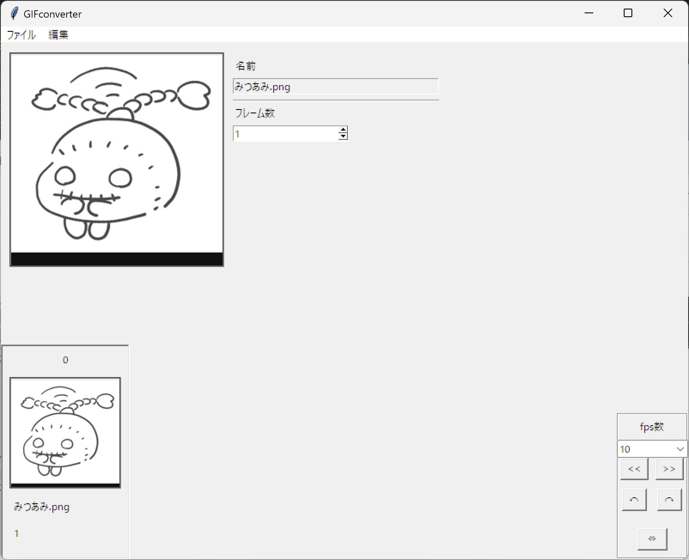

about
my profile
佐藤優理のプロフィールサイトです。
2019年4月にイオン北海道(株)に入社。
総菜売場担当として配属されます。
2022年4月に主任として異動となりますが、
同年8月にうつによる休職ののち退職し、
現在は就労移行支援サービスを利用しながら
PCスキルを勉強しています。
学歴・職歴
学歴
2012年3月 浦幌町立浦幌中学校 卒業
2012年4月 北海道立帯広三条高校 入学
2015年3月 北海道立帯広三条高校 卒業
2015年4月 藤女子大学 文学部 日本語・日本文学科 入学
2019年3月 藤女子大学 文学部 日本語・日本文学科 卒業
職歴
2019年4月 イオン北海道株式会社 入社
2023年10月 イオン北海道株式会社 一身上の都合により退社
自己PR
うつ状態による休職、退職を機に就労移行支援事業所への通所を経験いたしました。現在はセルフケアについての理解を深め、健康状態を維持する方法を学んだため、業務に支障をきたしません。
通所中の訓練を通じて改めて自己分析を深めた結果、PCスキルを活かした職業に就きたいと考え、現在もプログラミングの勉強を続けています。なぜＰＣを使う仕事の中でも、事務などではなくプログラマを目指すのかについては、プログラマとして働くうえで自身が他者よりも適していると思う点が三つあるためです。一つ目は間違いを恐れないこと、二つ目は新たな知識を進んで取り入れること、三つ目は整理整頓が得意というところです。
一つ目の間違いを恐れないことというのは、プログラミングをするうえで最初から完璧なコードを書くことにこだわらず、間違いを修正しながらコーディングをするという点で適していると考えます。
二つ目の新たな知識を進んで取り入れることというのは、技術の更新が激しいIT業界では必須の適性であると考えています。具体的には、前職では販促担当から教わった技術で、社用PCという限られた環境でExcelを使用した商品PR画像作成をしたり、業務効率改善のため独学でVBAを学び、事業部単位の売上実績から自店の実績をフィルターして、ABC分析に基づいた色分けをするマクロを作成したりしました。
三つ目の整理整頓が得意という点は、自分だけでなく、他者から見てもわかりやすいコードを書くという点で活かせると考えております。学生時代には卒業論文では奈良時代の文学作品における蛙の表現というテーマで執筆をしました。自分の興味のある分野を、知識の無い他人に説明しても理解してもらえるようにする、という点を第一に考え、論理的で伝わりやすさを念頭に置いた文を書くことに注意して執筆をした経験は、コードの伝わりやすさにも活かせると考えております。
初めての転職で、経験が足りないところも多々ございますが、何卒よろしくお願い申し上げます。
illust
my works


UTAU
music
花瓶に触れた/松田っぽいよ
0:00 0:00
offvocalはピアプロよりお借りしております。
program
js and py
GIF converter
制作記録
2024.1 Python(Tkinter)
趣味のイラストに関連させて、パラパラ漫画のようにGIF画像を作れるGUIアプリを制作しました。
Tkinterを使用する前には、Hit＆BlowのPython版をeelで作成したこともあり、eelでの制作を考えていましたが、ドラッグアンドドロップ機能（未実装）のテスト時に不便があり、Tkinterに変更しました。
制作中拘った点は、FPS数をプルダウンで選択できるようにした点です。